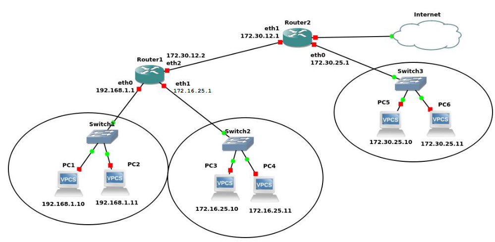

Encaminamiento
- Los routers operan de manera similar a los conmutadores, ya que también filtran el tráfico de la red
- En lugar de hacerlo según las direcciones físicas (MAC) lo hacen en base a las direcciones lógicas (direcciones IP)
- La función de encaminamiento se realiza en la capa de Red del modelo OSI
- Utilizan una tabla de encaminamiento y una o varias métricas de red
- Las tablas de encaminamiento pueden configurarse:
- Estáticas → programadas por el administrador de red
- Dinámicas → mediante un protocolo de enrutamiento
- Híbridas → son dinámicas pero el administrador puede añadir alguna entrada de forma manual
Supongamos que tenemos este esquema de red

El PC1 tendría la siguiente tabla de encaminamiento
| Equipo | Destino | Máscara | Gateway | Interfaz |
|---|---|---|---|---|
| PC1 | 127.0.0.1 | 255.0.0.0 | * | lo |
| 192.168.1.0 | 255.255.255.0 | * | eth1 | |
| * | * | 192.168.1.1 | eth1 |
El Router1 tendría la seiguiente tabla de encaminamiento
| Equipo | Destino | Máscara | Gateway | Interfaz |
|---|---|---|---|---|
| Router1 | 192.168.1.0 | 255.255.255.0 | * | eth0 |
| 172.16.25.0 | 255.255.255.0 | * | eth1 | |
| 172.30.25.0 | 255.255.255.0 | 172.30.12.1 | eth2 | |
| * | * | 172.30.12.1 | eth2 |